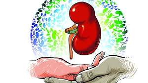
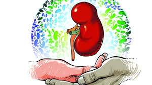
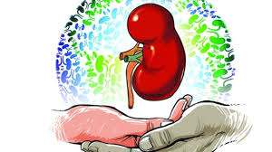
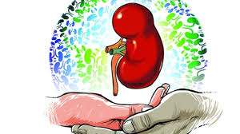
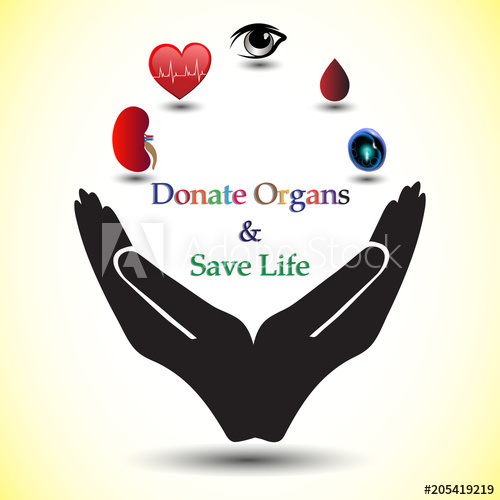
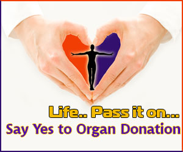
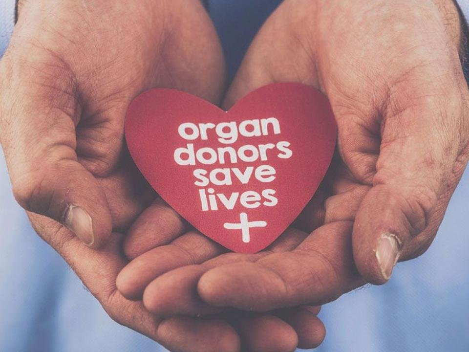
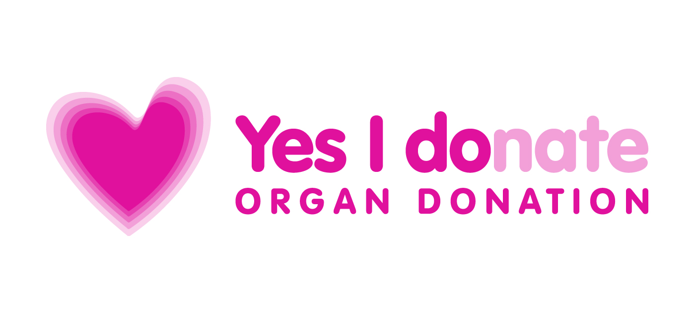
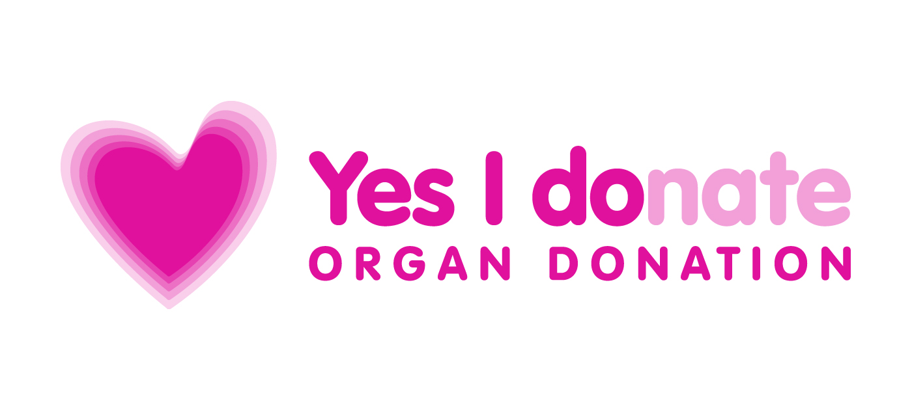

WHAT ORGANS CAN I DONATE


 



WE CARE 4 YOU Organ and tissue donation. Most organs are donated by deceased donors and used to help someone who needs a transplant. Some organs, like the kidney and liver, can be donated by living donors.
Need an organ transplant & don't know where to start? Here's a directory of transplant hospitals, doctors & coordinators across India, along with places to stay, labs, chemists, taxis & other facilities where you need to go.
The Living Donation Process. While most organ and tissue donations occur after the donor has died, some organs (including a kidney or part of a liver or lung) and tissues can be donated while the donor is alive.



One deceased organ donor can save up to eight lives. Potentially, the following life-saving organs can be transplanted: the heart
lungs (2)
kidneys (2)
liver (split in 2) and pancreas.
Eyes can help restore sight to people with cornea problems (the clear part of the eye).
Tissues include the following: Bones, skin, heart valves, arteries and veins, cartilage and tendons.
Believe it or not, there is no age limit! At the time of death, the potential donors organs are evaluated to determine their suitability for donation. Individuals in their 80s and 90s have successfully donated organs including liver and kidneys to save the lives of others.
 
